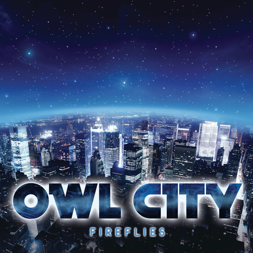

Fireflies
by Owl City

[Verse 1]
You would not believe your eyes if ten million fireflies
Lit up the world as I fell asleep
'Cause they'd fill the open air and leave teardrops everywhere
You'd think me rude but I would just stand and stare
[Chorus]
I'd like to make myself believe
That planet Earth turns slowly
It's hard to say that I'd rather stay awake when I'm asleep
'Cause everything is never as it seems
[Verse 2]
'Cause I'd get a thousand hugs from ten thousand lightning bugs
As they tried to teach me how to dance
A foxtrot above my head, a sock hop beneath my bed
A disco ball is just hanging by a thread
[Chorus]
I'd like to make myself believe
That planet Earth turns slowly
It's hard to say that I'd rather stay awake when I'm asleep
'Cause everything is never as it seems (When I fall asleep)
[Bridge]
Leave my door open just a crack
(Please take me away from here)
'Cause I feel like such an insomniac
(Please take me away from here)
Why do I tire of counting sheep
(Please take me away from here)
When I'm far too tired to fall asleep?